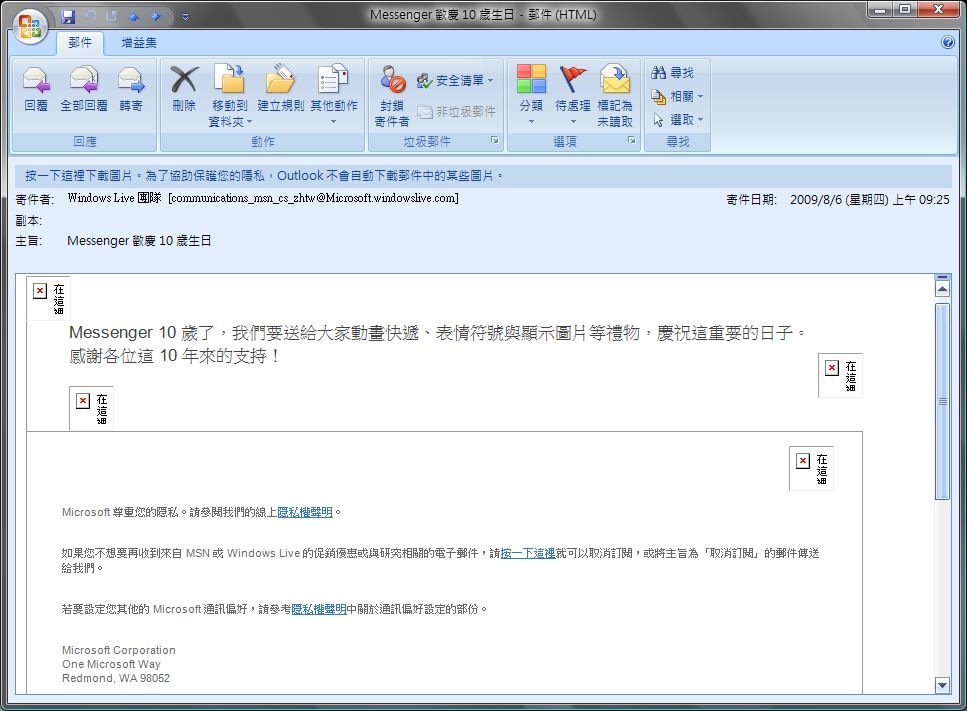

大家應該有使用Hotmail (Live mail)吧?
有使用的人可能會收到一封信，標題：Messenger歡慶10歲生日
信件內有一個\"快來領取小禮物\"的連結
但仔細一看微軟好像沒有microsoft.windowslive.com的網域
上網爬文才知道有可能是\"釣魚網站\"
小心不要被上當了，請大家小心喔~
連結如下 (勿點)
hxxp://microsoft.windowslive.com/Key=35277.CPNR.C.HZ.C4vG6x
最近有收到那封信
我傻傻地點開網址, 看到裡面是簡體字後馬上關掉
看來以後的警覺性要高一點了 OTZ
了解~
話說 我還沒收過這種信
還是 已經收過
但因為之前清信箱
刪太X
子己也不知道有沒有這封
(逃[:smile33:] )
喔喔
這麼一說我似乎也有收到
不過我對Windows Live寄來的郵件都是看也不看一眼的 XD
寄來的都是些廢話，這次居然還有釣魚網站
看來這玩意還是別碰的好
補一張圖好了~
Live團隊寄的信偶爾會看一下，這次竟然是釣魚信...

附件: msglive.jpg
收到這封信的先看一下網域
如果不是microsoft.windowslive.com
那應該就是真的live團隊寄的信
啊...那封信我正也有收到
幸好我是那種一看到系統傳單就直接扔掉的傢伙 ＝u＝＂
因此逃過一劫...最近電腦存了很多重要的東西，要是再掛掉我應該會昏倒 Orz